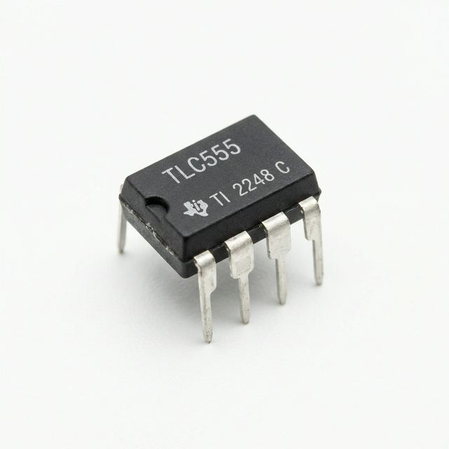
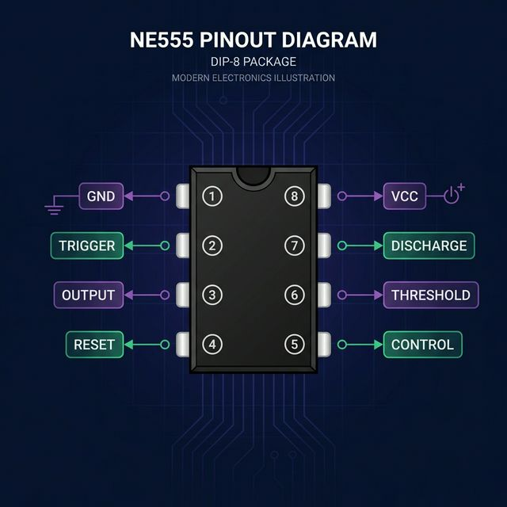

Cos'è il 555 Timer?
Il NE555 è uno degli integrati più venduti nella storia dell'elettronica. Inventato nel 1972, è ancora oggi usato in migliaia di progetti. È un circuito versatile che può generare impulsi, onde quadre, ritardi e oscillazioni.
Ha solo 8 pin e funziona con alimentazione da 4.5V a 16V, il che lo rende perfetto per progetti con Arduino, batterie e alimentatori standard.
Piedinatura (Pinout)
| Pin | Nome | Funzione |
|---|---|---|
| 1 | GND | Massa |
| 2 | TRIGGER | Avvia il ciclo (attivo basso) |
| 3 | OUTPUT | Uscita (0V o Vcc) |
| 4 | RESET | Reset (attivo basso, collegare a Vcc se non usato) |
| 5 | CONTROL | Tensione di controllo (mettere condensatore 10nF a GND) |
| 6 | THRESHOLD | Soglia superiore (2/3 Vcc) |
| 7 | DISCHARGE | Scarica del condensatore |
| 8 | Vcc | Alimentazione (4.5V - 16V) |
Modo Astabile (Oscillatore)
In modo astabile, il 555 oscilla continuamente generando un'onda quadra. Non serve nessun trigger esterno: parte da solo all'accensione.
Il duty cycle dipende dal rapporto tra R1 e R2:
Esempio: LED lampeggiante a 1Hz
- Vogliamo f = 1Hz
- Scegliamo C = 10μF e R2 = 68kΩ
- R1 = 1.44/(f×C) − 2×R2 = 1.44/(1×0.00001) − 136000 = 144000 − 136000 = 8kΩ
- Usiamo R1 = 10kΩ (valore standard) → f ≈ 0.95Hz ✅
Modo Monostabile (One-Shot)
In modo monostabile, il 555 genera un singolo impulso di durata precisa quando riceve un trigger. Perfetto per ritardi, temporizzatori e anti-rimbalzo.
Esempio: Ritardo di 5 secondi
- Vogliamo T = 5s
- Scegliamo C = 47μF
- R = T / (1.1 × C) = 5 / (1.1 × 0.000047) = 96.7kΩ
- Usiamo R = 100kΩ → T ≈ 5.17s ✅
5 Errori da Evitare
- Dimenticare il condensatore sul pin 5 — Metti sempre un condensatore da 10nF-100nF tra pin 5 e GND per stabilità.
- Non collegare il pin 4 (RESET) — Se lo lasci flottante, il 555 si resetta casualmente. Collegalo a Vcc!
- Condensatori elettrolitici di bassa qualità — Causano imprecisioni nella temporizzazione. Usa condensatori con tolleranza ≤10%.
- Carico troppo pesante sull'uscita — Il 555 può dare max 200mA. Per carichi maggiori, usa un transistor o un MOSFET.
- Alimentazione non filtrata — Metti un condensatore da 100nF vicino ai pin 1 e 8 per filtrare i disturbi.
TLC555 — La versione CMOS del 555
Il TLC555 (Texas Instruments) è la versione CMOS del classico NE555. Vantaggi: consumo 1000× inferiore, funziona fino a 2MHz e da 2V a 15V. Pin compatibile al 100% con il NE555.

Chip TLC555 (DIP-8)

Pinout NE555 / TLC555